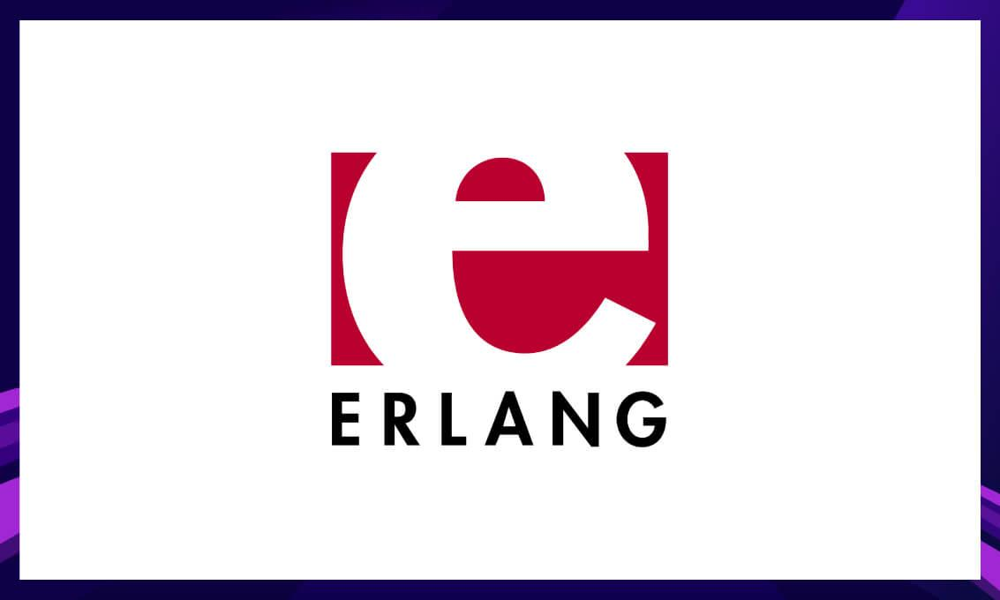

HeadLine
Modern technology provides new conditions for biotechs and genetics.
But how do you ensure that it is acceptable? What ethical challenges must be taken into account?
This is discussed by Max Tegmark, Elin Esbjörner,
Ross King and Stefan Jansson in this Chalmers seminar.
C#HeadLine
C++ is a low level programming language that adds object-oriented features to its base language C
whereas C# is a high level language. C++ compiles down to machine code whereas C# 'compiles' down to CLR (Common Language Runtime),
which is interpreted by JIT in ASP.NET
C# is one of the most popular programming languages and can be used for a variety of things,
including mobile applications, game development, and enterprise software.
Knowing C# opens a great deal of doors for you as a developer.
ErlangHeadLine
Erlang is a programming language used to build massively scalable soft real-time systems
with requirements on high availability.
Some of its uses are in telecoms, banking, e-commerce, computer telephony and instant messaging.
While its presence remained constant, Erlang's showing on other channels wasn't
enough to boost its Community Engagement. Last year, Erlang ranked 5th in terms of the worst job market.
Hence, Erlang has made it so high up on our list of Top 10 Dying Programming Languages 2020.
